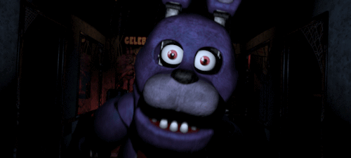
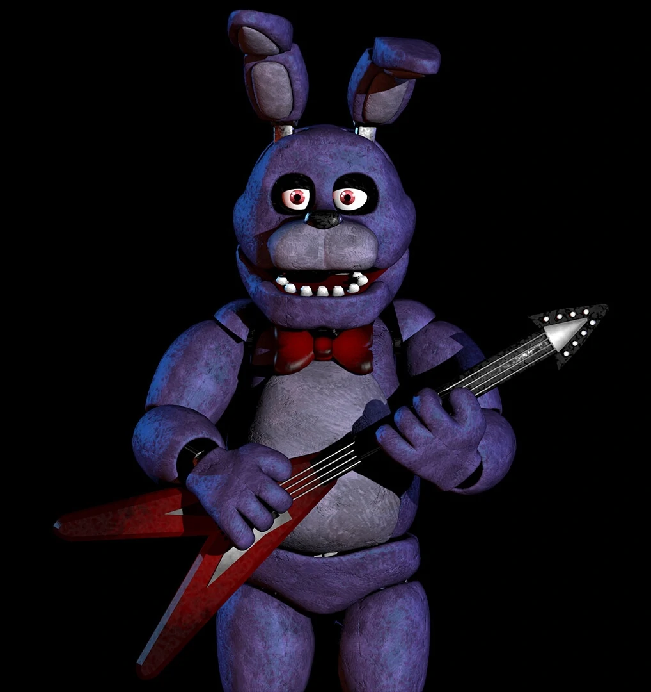

Bonnie the Rabbit, also known as Bonnie the Bunny and The Bunny
- is a minor antagonist of the first part of Five Nights at Freddy's and one of the antagonists of the second part.
Purple
is an animatronic rabbit with a red bow tie. Just like his fellow animatronics, Freddy and Chick (and formerly
Foxy),
Bonnie is a friendly children's entertainer during the day and kills any human he sees during the night,
including Mike Schmidt, the mysterious protagonist.

Bonnie is a lilac-colored animatronic rabbit with long ears. He plays a red bass guitar in the restaurant. His
body, except for his head, is identical to Freddy's, but has a different color, and he also wears a red bow tie.
This version
Bonnie has no upper teeth.
The second part of Bonnie has a slightly different design, and it is also heavily damaged. Like Freddy, he has two
buttons on his chest. Bonnie's upper face and left hand are missing. The covering on his right hand and left
feet have come off. His lower body has become much larger than his upper body, and he has become somewhat
more massive. His chin does not reach his tie.
During the day, Bonnie appears as a friendly, harmless, joyful, sweet and cute robot that never harms children, in
the
Freddie plays guitar in the gang; although his appearance is somewhat disturbing, her behavior when confronted by
adults is malicious.

As soon as he encounters the night guard, Bonnie transforms into a cunning, vicious, ruthless, malicious
impatient murderous stalker, obsessed with trapping the protagonist in a suit like an endoskeleton.
Bonnie is the smartest and second most dangerous of the animatronics, after Foxy. He doesn't wait long outside the
door, but if
not too far away, he can reach his destination unexpectedly quickly. Unlike the persistent Chicky, Bonnie does not
will not stand in front of a closed door for a long time. He is also the first to leave the stage.
Bonnie is known for being one of the most active animatronics in the game (but not on the first night). He always
walks to the left.
When he reaches the office, he appears in the left doorway (unlike Chicky, who goes to the right).
He has the ability to turn off the cameras when he moves to another room, just like Chicky and Freddy.
Sometimes, if you look at him while he's on stage, he won't move. That's one of the best ways to
to get through the first two nights. However, this method may not work because Bonnie knows how to turn off the
cameras.
| Back | Home | Forward |